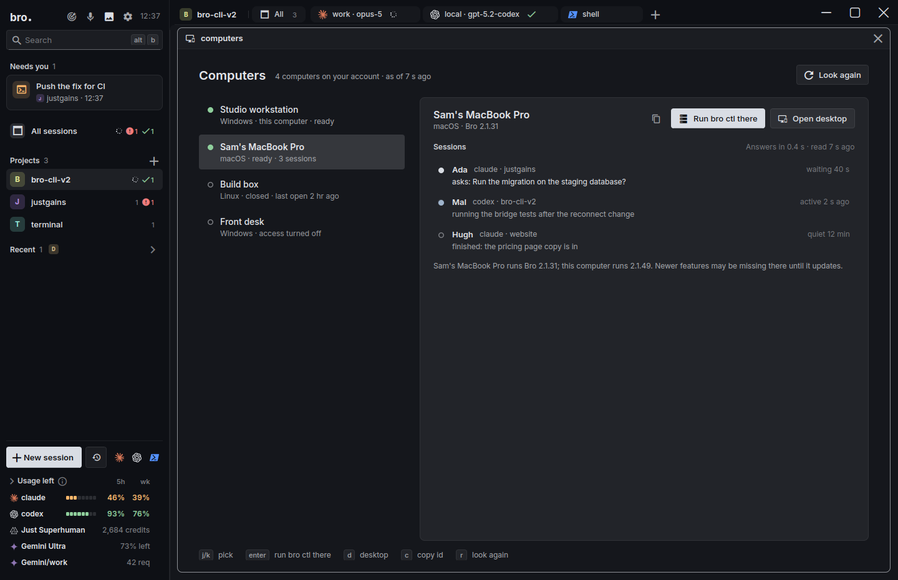
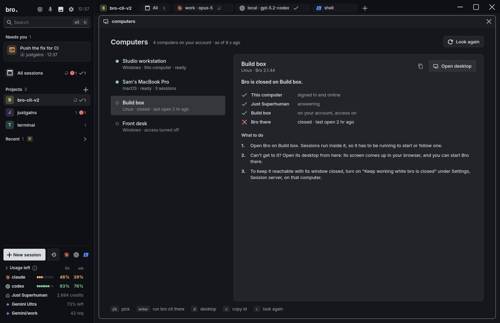
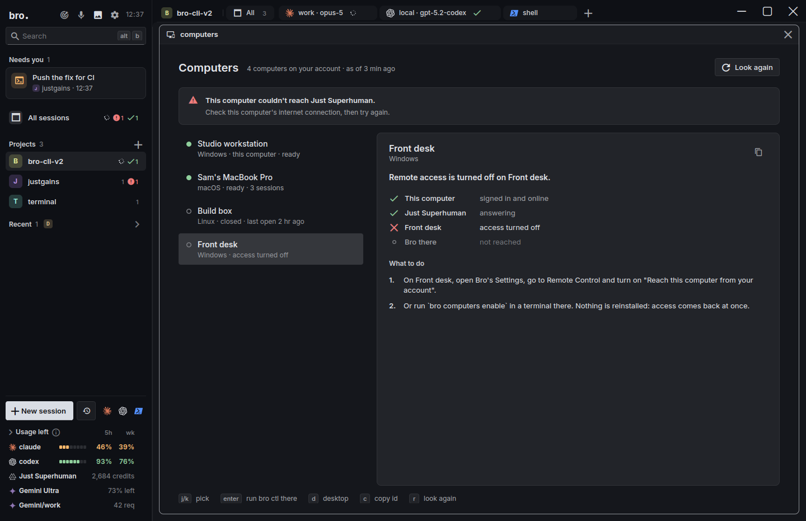
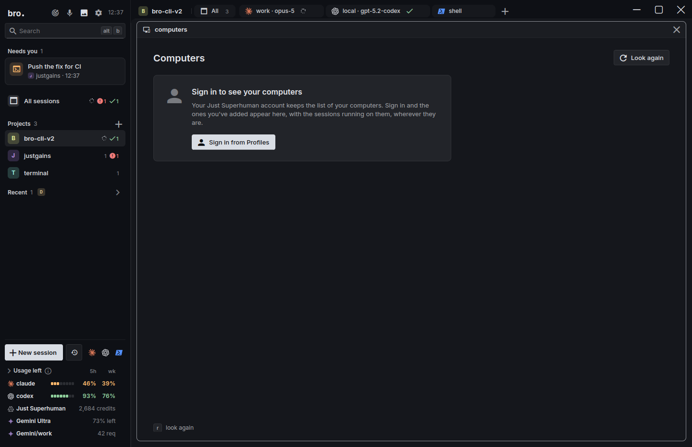

T3 Code deep dive
I read T3 Code's source for how it reaches other machines, where it spends effort on speed, and the small behaviours it gets right, then checked each against bro's code. The biggest gaps were in how bro reaches a computer through your Just Superhuman account, and in something bro's own log showed that T3 Code's list did not: frames that block the app's main thread. Both are changed in bro 2.1.49.
Everything remote goes through the account, and it now behaves like a live connection.
T3 Code calls a machine an environment and lets a client reach it over several routes: the local network, Tailscale, an SSH tunnel it sets up itself, or T3 Connect, which is their account-based path. One supervisor per environment owns reconnecting. Our equivalent of T3 Connect is JustConnect: a computer is reachable when it is on your Just Superhuman account. I kept that as the only remote path, as you asked, and brought over what makes theirs feel solid.
What bro did before, and what it does now
| Area | Before | Now |
|---|---|---|
| Getting work to a computer | Bro on the target looked for work every 5 seconds, so a request waited 2.5 seconds on average before anything happened. | The target's request is kept open by the account server until there is work, so it starts about one round trip after it is asked. A server that doesn't hold requests yet is asked on a clock: every quarter second for 10 seconds after work arrived, easing back to 5 seconds when idle. |
| Hearing the result | The asking side checked once a second. | Its read is held until the job settles. Against an older server it checks after 80 ms, then a little less often each time, up to once a second. |
| Connections | Every request opened a new encrypted connection: a fresh handshake for the submit, each check and each poll. | One shared connection pool for the whole app, so a job's submit, result and the next poll reuse the same session. The same pool carries everything that goes through bro's shared HTTP helpers (sign-in, the account, usage lookups, downloads). Remote desktop set-up, voice, browse.rs and the sound-pack registry still build their own client. |
| More than one thing at once | One job at a time. Listing sessions waited behind a slow start, such as opening a session that first installs its agent. | Up to four at once. Lists and reads run side by side. Typing into a session, pressing keys, answering a prompt and closing it still run in the order asked, one at a time per session. |
| When the account server is down | Tried again every 5 seconds, forever, at the same instant as every other computer. | Waits 1 second, then 2, 4, up to a minute, with half of each wait random so an account's computers don't all return together. |
| A lost answer | A submit whose answer was lost failed. Running it again made a second job. | Repeated up to four times with the same request ID, which the server answers with the job it already made. The work runs once. |
| Turning access off | Noticed at the next poll. | A request the server is holding is hung up within 2 seconds, so no work is handed to a computer that won't run it. |
| Why it failed | The server's sentence, or a dump of the job as JSON. | The first link that failed, named, with what fixes it. Details below. |
| In the app | A switch in Settings. Everything else was the command line. | A Computers view, and a line under the switch saying where this computer's own connection stands. |
The Computers view
Open the palette and search “computers”. The list shows every computer on the account with a dot for whether it can run sessions right now. Picking one shows either its sessions or the reason it can't be reached.




Failures are explained link by link
This is T3 Code's best idea in this area. A request crosses four links in order: this computer, Just Superhuman, the other computer, and Bro running there. The diagnosis names the first one that fails and leaves the later ones unjudged, because nothing is known about them. The same diagnosis is used by the view, bro computers, and a remote bro ctl.
When every link answers, doctor sends one small request and reports how long it took there and back. Work that didn't finish now says what became of it: the tool's own reason when it ran and failed, “never delivered” when Bro there didn't pick it up, and a warning to check before repeating when it was handed over and no result came back.
One thing needs you: deploying the account server change
F:\JustSuperHuman\JustSuperServer\src\justconnect.js but not deployed. I did not push to production. Until it is deployed, bro uses the clock described above and everything else in the table still applies.The change is backwards compatible in both directions. An older Bro never asks to wait, so nothing changes for it. A newer Bro against the current server sees an immediate answer and falls back by itself.
- A cap, because of how Fly counts.
fly.tomllimits the Machine by open requests (soft limit 200), and a held request is an open request. At most 64 are held at once; past that, requests are answered straight away.JUSTCONNECT_HELD_MAXchanges the cap and 0 turns holding off. - Checked again after the wait. A poll that was waiting when access was turned off is refused, not handed work. A worker that hung up is handed nothing.
- The web console can use it too. It polls a job every 700 ms today; adding
?wait=20to that read would make it instant. I left the console alone.
What T3 Code does that I did not copy
| T3 Code | Why not here |
|---|---|
| SSH and Tailscale routes | You asked for the account connection only. Their SSH path installs a server on the remote machine through a piped shell script; ours installs through the account's management service. |
| A live socket to the remote machine | Their client streams a remote session's output over a WebSocket. Ours reads it through jobs, which is enough to list and follow sessions but not to show a live terminal. Doing it properly means a relay in the account server. It is the largest item in “What's left”. |
| Pairing secret in the URL fragment | T3 Code puts the pairing token after # so it never reaches a server log. bro's pairing URL carries it as ?token=. Changing that needs the phone app and the web client to change in step, so I've listed it and not touched it. |
| Short-lived socket tickets, per-call permission scopes | Real hardening, and a design decision about the phone bridge that deserves its own pass. |
The slowest thing in bro today is not on T3 Code's list. It is in bro's own log.
Before copying techniques I read ~/.bro/v2-perf.log, where bro writes down every pass of its main loop that takes over 50 ms. Between 9:11 pm on 9 November and 11:40 am on 10 November it recorded 2,405 slow passes.
| Where the time went | Passes | Typical | 9 in 10 under | Worst |
|---|---|---|---|---|
| Handing the frame to the GPU | 1,844 | 67 ms | 115 ms | 9,338 ms |
| Laying the frame out | 366 | 69 ms | 134 ms | 1,624 ms |
| Not attributed to any step | 188 | 64 ms | 182 ms | 9,895 ms |
| Housekeeping between events | 5 | 67 ms | 119 ms | 119 ms |
| Handling an event | 2 | 211 ms | 211 ms | 211 ms |
Three quarters of the slow passes are the app waiting on the graphics system, and several of those waits ran for seconds: 9.3, 6.8, 5.6, 4.9. That wait happens on the thread that also takes keys and the phone's input. A session's output reaches the phone from its own thread, so a watching phone keeps updating, but anything the phone sends waits until the frame lets go.
What I measured
I split the GPU's part of a frame into its three steps and ran the demo window for 40 seconds with every frame logged, once in today's mode and once in the mode that never waits for the display's refresh.
| Mode | Frames | Typical | 99 in 100 under | Worst | Where the worst one stalled |
|---|---|---|---|---|---|
| fifo (today) | 1,522 | 1.2 ms | 4.3 ms | 55.0 ms | Getting the next image to draw on: 53.2 ms |
| mailbox | 1,506 | 1.1 ms | 4.1 ms | 71.8 ms | Handing the finished frame over: 70.6 ms |
Switching modes does not remove the stall. It moves it from one step to the other, and in the second run it came back about every two seconds. So the cause is outside bro's choice of mode, and I left the mode alone. I don't know yet what the cause is. My guess is that something else on this machine uses the display on that rhythm.
One limit on this comparison: both runs were bro's demo, which drew on the RTX 4090 through Vulkan. Your own window uses Acrylic, so it draws through DX12, and the comparison has not been repeated there. Its log gives a first reading, taken at 14:47 on 10 November: in the first 40 minutes on 2.1.49, 66 of 77 waits on graphics were in the hand-over step, and the longest was 97 ms. That is too little to settle it.
What changed
A blocked frame no longer repeats itself
After a frame that blocks the loop for 400 ms or more, bro draws nothing for four times as long as it took, longer for each one in a row, at most 30 seconds. The loop stays free for keys and the phone. Any key, click or pointer move ends the hold at once. The log notes each hold.
The log now says which step stalled
Each slow pass ends with (acquire … · draw … · present …). The next time the log fills up it will show whether the seconds-long stalls are waiting for an image or handing one over, which narrows the cause.
Two switches for measuring
BRO_PERF_SLOW_MS=0 writes every pass down. BRO_GPU_PRESENT=mailbox, immediate or fifo picks the mode, to compare them on another machine.
T3 Code's techniques, checked against bro
“Has it” means I read the bro code that does it. “Not checked” means I did not get to it, so it is neither a gap nor a pass.
| Technique | T3 Code | bro | Status |
|---|---|---|---|
| Reuse connections | One socket per environment. | A new HTTP client per call. One pool now carries the account path and bro's shared HTTP helpers; remote desktop set-up, voice and two smaller callers still build their own. | Mostly fixed |
| Notice clients that vanish | Pings every 5 s; 15 s of silence drops the socket. | A phone that left without closing stayed counted as a viewer until the system gave up on it, which with nothing being sent could be never. | Fixed |
| Attach with a snapshot, then live output | Subscribe, send a snapshot, replay only what is newer. | The same, by sequence number. The snapshot is rebuilt from the screen model, so old terminal queries are never replayed. | Has it |
| A client that falls behind | An 8 MiB queue per subscriber; overflow drops the backlog and sends a new snapshot. | A 4,096-event channel; falling behind sends the session list and a new snapshot of each watched screen. | Has it |
| Don't stream what isn't watched | One subscription per viewed thread. | Output goes only to clients watching that session. The rest get a small “something happened” note twice a second. | Has it |
| Draw less for what isn't in focus | Hidden terminals don't render. | The focused session draws at once; others on screen at most every 33 ms; off-screen ones every 250 ms. The focused session's reader thread runs at higher priority. | Has it |
| Cheap git lookups | Caches with expiry, and failure back-off. | The branch is read from .git/HEAD directly, no process started. Project roots are cached. | Has it |
| Compress the socket | Per-message compression on every frame. | Ordinary HTTP answers are gzipped; the socket that carries terminal output is not. Terminal output compresses well, so this matters on a phone connection. | Gap |
| Split large frames | Messages over 48 KiB go in parts so a slow link doesn't trip the liveness timer. | A snapshot with 1,000 rows of history goes as one message. | Gap |
| Flow control on terminal streams | At most 8 chunks or 64 KiB in flight until the client acknowledges. | None; relies on the catch-up snapshot above. | Gap |
| Delay the PTY resize while dragging | 150 ms, flushed on release. | Not checked | |
| Streaming replies redraw only the last block | Splits the text at closed blocks and re-renders only the open one. | 366 slow passes were layout, up to 1.6 s, so this is worth checking in the conversation view. | Not checked |
| Background work only while someone is watching | Clients report visibility; the server pauses polling for scopes nobody has open. | The new view follows this: it refreshes while open and less often without the keyboard. | Not checked elsewhere |
Two fixed, the rest listed with what I know.
A settings file bro can't read is no longer lost
A stray character in v2.toml made bro start on its defaults without saying so, and the next setting you changed wrote those defaults over your file. Now bro says the file couldn't be read and why, and the first change keeps your file beside the new one as v2.toml.unreadable-<when>. T3 Code's rule is that setup never overwrites settings it couldn't read.
Phones that left stop counting
The bridge pings each connection every 30 seconds, gives up on a send that takes over 30 seconds, and closes a connection that answers nothing for 10 minutes. The limit is long on purpose: a phone back within minutes resumes on the connection it had, which is the fast path you already built.
Worth doing next, in the order I'd do them
| T3 Code does this | What it is | In bro |
|---|---|---|
| Undo for sidebar actions | Archive, pin, snooze and discard each show a 5-second Undo, and the shortcut works even from the reply box until you type. | Not checked |
| Toasts wait for you | A toast's timer only runs while the window is visible and focused, so one that appeared while you were away is still there when you return. | Not checked |
| Don't announce what you stopped | A run you interrupted yourself never produces a “finished” notification. Neither does the first sighting of a session. | Not checked |
| Lists hold still while open | A picker freezes its order while it is open, so a row doesn't move under the pointer. | Not checked |
| Big pastes become attachments | 32 KiB or more is attached as a file, with a modified paste to keep it inline. | Not checked |
| Prompt stash | One key saves the half-written prompt and its attachments; the same key on an empty box brings it back. | Not checked |
| Wait before saying “disconnected” | A status is shown only after 400 ms and then kept for 400 ms, so brief blips never flicker. | In the new view |
| Say when the other machine is behind | “X runs an older version” with an update action. | In the new view |
| Tell the user why the host dropped | The server reports its last freeze on connect, so the client can say “froze for 12 s”. | Gap |
| Restart loop guard | A recovery page that won't offer a version that already failed to start. | Not checked |
Tests, a stand-in server, and the real window. Not two real computers.
| What | Result |
|---|---|
| bro-core | 493 passed, 27 skipped (network). New: the link-by-link diagnosis, and the settings safeguard. |
| bro-bridge | 249 passed, 9 skipped. New: the worker run end to end against a stand-in account server in both modes, per-session ordering, and a silent client being dropped while one that answers stays. |
| Desktop app | 704 passed, 2 failed. Both failures come from another session's uncommitted edits in this working tree, not from this work: a demo shortcut in views/stats.rs skips the scan that usage_info_icon_opens_token_stats_in_two_tabs waits for, and panes/auto_resume.rs has an in-progress change. |
| Account server | 22 passed across the JustConnect and sign-up tests. Three are new: a waiting worker woken by new work and a waiting reader hearing the result, a worker that hung up being handed nothing, and access turned off ending both kinds of wait. |
| The installed build | bro computers list and bro computers doctor run against the live account from the 2.1.49 binary. doctor on an ID that isn't on the account answered “That computer isn't on your account” with the first two links passed and the third failed, from the server's real refusal. |
| The window | The Computers view in dark and light, with a ready computer, a closed Bro, access off, an unreachable account, signed out and empty. Two 40-second measured runs for the frame timings. |
In the order I'd take them.
| Next | Why |
|---|---|
| Deploy the account server change | It turns “within a few seconds” into “at once” for every computer. Run node --test test/justconnect.test.js in JustSuperServer first. |
| Try it between two real computers | bro computers enable on a second machine, then bro computers doctor <id> from this one prints the real round-trip time. |
| Read the log again in a day | The new step names will show whether the seconds-long stalls are in getting an image or handing one over, and whether the hold is catching them. |
| Open and reply to a remote session from the view | The view lists a remote computer's sessions but can't start one or type into one yet. The tools exist (open_session, send_input); the view needs a composer. |
| A relay for live remote terminals | The one place T3 Code is ahead in kind, not degree. The account server would pass a WebSocket between the viewer and the computer's Bro. |
| Compress the phone's socket, and split large snapshots | The two transport gaps above. Both matter most on a weak phone connection. |
| Move the pairing token to the URL fragment | Needs the phone app, the web client and the bridge to change together. |
Where the changes are
| File | What |
|---|---|
bro-core/src/http.rs | The shared connection pool. |
bro-core/src/justconnect.rs | Held calls, retry pacing, repeat-safe submits, typed refusals. |
bro-core/src/justconnect/health.rs | The link-by-link diagnosis and its wording. |
bro-bridge/src/justconnect.rs | The worker: held polls, parallel reads, per-session order, connection status. |
bro-bridge/src/ws.rs | Pings, the send limit and the silence limit for phone and web clients. |
bro-tui/src/services/computers.rs, views/computers.rs, views/computers/gui.rs | The Computers view, in the terminal UI and the desktop app. |
bro-tui/src/computers_cmd.rs | bro computers doctor, clearer status and failures. |
bro-tui/src/app/gui/redraw.rs, mod.rs, perf.rs, bro-gfx/src/renderer.rs | The hold after a blocked frame, the step timings, the two measuring switches. |
bro-core/src/config.rs | The settings safeguard. |
JustSuperServer/src/justconnect.js, config.js, tests and docs | Held requests on the account server. Not deployed. |
docs/justconnect.md here and in the Tactical RMM repository | The view, doctor, how work is delivered, and the wait parameter. |